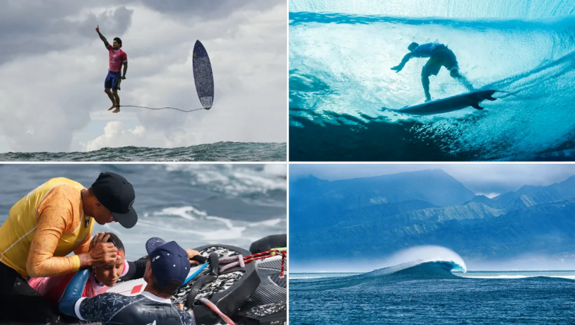

Le surf est un sport dans lequel le sportif glisse sur des vagues à l'aide d'une planche.
Faisant son apparition aux JO en 2020, ce sport a gagné beaucoup de fans, faisant de ce sport.
Mais malgré cette popularité, il reste un des sports les moins regardés à cause de son heure de diffusion.
Le logo officiel du surf aux JO 2024
Records Battus
Le surfeur brésilien Gabriel Medina a réalisé le record olympique du score le plus haut obtenu sur une seule vague,
avec un impressionnant 9.5.
Lors de cette édition des Jeux Olympiques, l'épreuve de surf a offert des moments spectaculaires. L'une des vagues
les plus marquantes a été celle maîtrisée par Gabriel Medina, qui a exécuté un incroyable "aerial" salué par les juges et le public.
Par ailleurs, l'athlète tahitien Kauli Vaast a impressionné en atteignant la finale avec une performance jugée historique par les experts.
Enfin, la météo imprévisible de Teahupo'o a ajouté du suspense, rendant la compétition encore plus palpitante.
Planning
Préliminaires et Repêchages : du 27 au 29 juillet
1/8 finales : 1er août
1/4 finales : 2 août
1/2 finales : 5 août
Finales : 6 août
Temps Forts

La photo de l'athlète Gabriel Medina a eu beaucoup de popularité dans les médias
En plus du record de Gabriel Medina pour le score le plus élevé sur une vague, un autre exploit a marqué ces Jeux :
le Japonais Kanoa Igarashi a battu le record de vitesse sur une vague, atteignant une pointe de 38 km/h,
une première dans l'histoire olympique.
Résultats de l'athlète
Athlète : Kauli Vaast
Préliminaires : 6ème
1/8 Finales : 5ème
1/4 Finales : 1er ex.
1/2 Finales : 2ème
Finales : Médaillé d'Or
L'épreuve s'est déroulée à Teahupo'o, dans le sud de Tahiti